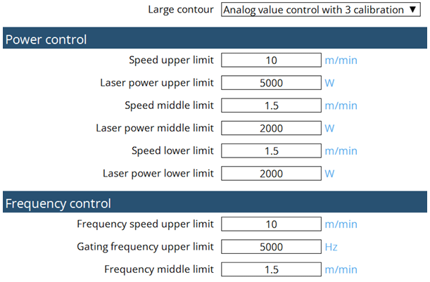

切割 进刀策略 为了避免穿刺造成轮廓损坏，材料在轮廓的一侧被穿刺几毫米。然后使用不同策略接近轮廓，具体取决于材料、材料厚度和轮廓尺寸。 正常进刀 使用正常进刀，切割直接从起始孔进行， 从相应的切割表中选择切割参数。 减量进刀 以低速接近轮廓。功率、频率、喷嘴距离。 带预切割的进刀 穿刺后，以低速切割几毫米，具体取决于材料厚度。然后切割头以最后激活的定位速度返回到起始孔，接近轮廓并用相应切割表中的参数进行切割。 进刀后冷却 对于进刀后冷却，激光束在进刀后将在实际轮廓被切割之前短暂关闭。不过，切割气体仍继续流动并冷却加工点。 打标和凿坑 材料零件的打标是通过材料表面颜色的变化实现的。因为只有最少的材料被移除，因此在涂珐琅或涂漆后通常不会再感觉到打标的存在。 切割过程 大、中、小轮廓切割 在TRUMPF的CNC编程和激光切割背景中，大、中、小轮廓的方案与切割或加工过程中的不同几何特征的尺寸和复杂性有关。这些区别有助于 优化模具移动、切割策略和加工速度。 1.大轮廓 大轮廓是指零件的长连续切割或外轮廓。 这些通常是定义外部形状的主要切割路径。 特点： 直线或平滑弯曲。 更少的中断。 由于热积聚或精度损失的风险较小，因此可以以更高的速度切割。 2.中等轮廓 零件内部或沿零件的中等尺寸特征，例如 大型切口、孔或槽。 这些轮廓比大轮廓更复杂，但不像小轮廓那么复杂。 特点： 由于细节适中，可能需要调整切割速度。 需要某种程度的精确控制来保持准确性。 会影响散热和材料性能。 3.小轮廓 这些指的是详细、复杂的切割，例如 小孔、精细图案或尖角。 切割小轮廓需要更高的精度和 更慢的速度，以保持准确性并避免缺陷。 特点： 通常涉及狭窄的半径、错综复杂的形状或密集的切割区域。 容易产生热效应（熔化、毛刺、材料变形）。 可能需要自适应策略，如降低功率、精细喷嘴控制、或微连接工艺。 模拟校准曲线 TRUMPF 使用3点校准曲线进行模拟激光控制。  FlyLine FlyLine是一种加工策略，可以帮助在加工某些板材类型时节省大量的时间。FlyLine特别适用于孔栅。 激光束在飞行加工中打开和关闭，具有很高的位置精度。 当激光束打开和关闭时，轴不会停止。 不在一条线上的单个轮廓被分割成轴向平行的轮廓段。这可以避免转角加工。 仅在方向发生少量变化时，速度才会降低。